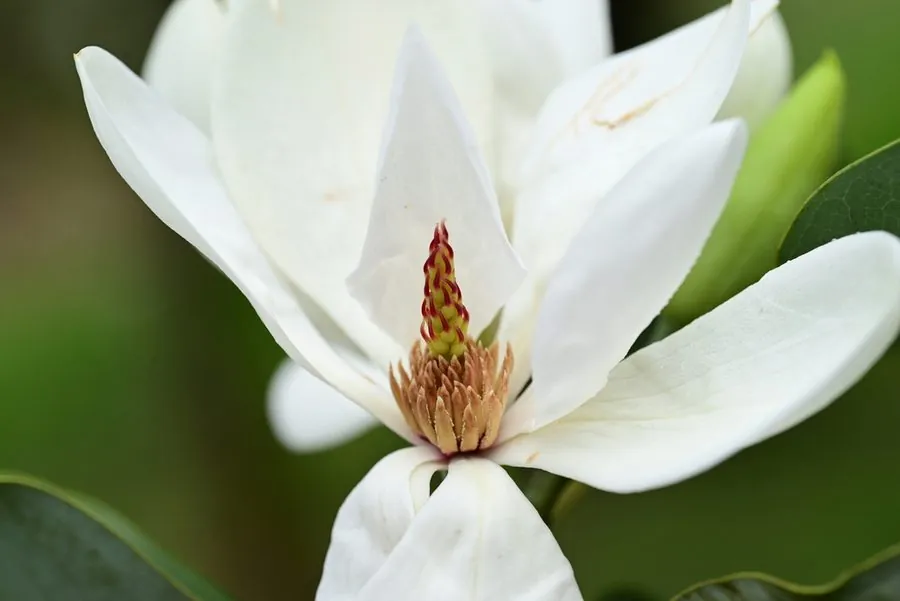

乔木 · 植物界
深山含笑 Michelia maudiae

中国南方山地的常绿乔木，早春开大朵白花、香气清幽，树形挺秀，是优良的园林观赏与用材树种。
- 分类
- 门被子植物门纲木兰纲目木兰目科木兰科属含笑属
- 栖息环境
- 海拔 500–1500 米的山地常绿阔叶林，喜温暖湿润、半阴
- 地理分布
- 中国浙江、福建、江西、湖南、广东、广西、贵州等地，为中国特有树种
- 保护级别
- 暂无评估；中国未列入国家重点保护野生植物名录
物种志
深山含笑为常绿乔木，高可达 20 m，树干通直，树皮灰褐色；叶片互生，长椭圆形至倒卵状椭圆形，革质，表面深绿。花期 2–3 月，花单生于枝顶或叶腋，花被片 9 枚、白色，花径 10–15 cm，香气清幽；聚合蓇葖果穗状，成熟时开裂，种子红色。
深山含笑是中国特有树种，分布于浙江、福建、江西、湖南、广东、广西、贵州等地海拔 500–1500 m 的常绿阔叶林中，喜温暖湿润、半阴环境，适宜深厚肥沃的酸性土壤。早春白花大而芳香，树形挺秀、四季常青，是优良的园林观赏树种；木材纹理直，可供建筑与家具用。深山含笑与乐昌含笑外形相似，但深山含笑花白色、花期更早，乐昌含笑花淡黄色、花期稍晚。
形态与习性
- 株高可达 20 m，树干通直
- 花期2–3 月，花白色、径 10–15 cm
- 果期8–9 月，聚合蓇葖果
- 光照喜半阴，幼树耐阴
- 土壤深厚肥沃的酸性壤土
- 主要用途园林观赏、建筑与家具用材
趣味知识
- 深山含笑早春开大朵白花，花径可达 15 cm，香气清幽。
- 深山含笑是常绿乔木，冬季不落叶，早春开花时满树白花。
- 深山含笑与乐昌含笑外形相似，但前者花白色、花期更早。